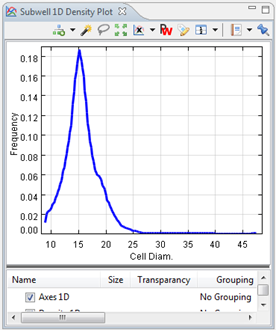

The 1D Density Plot gives a line curve that shows the estimated frequency for a selected feature.

| Density 1D layer | This will add a line curve. |
| Histogram 1D Layer | This will add a bar curve. |
| Cumulative | This will show the cumulative distribution. |
| Initial number of bins | This gives a starting point for the kernel density estimation algorithm that calculates the most probable distribution for this sample. Any reasonable starting point will lead to a good approximation. |